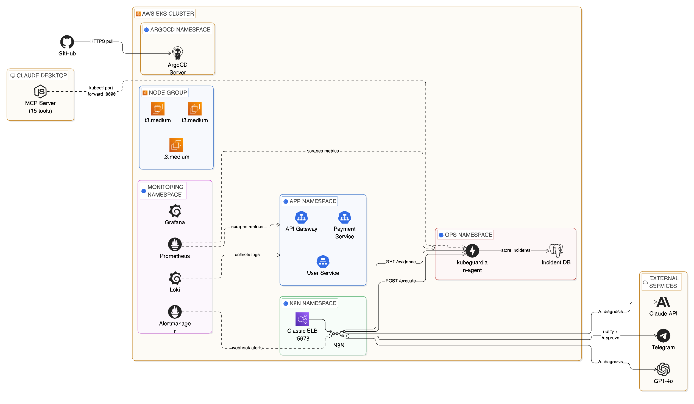

I Built an MCP-Enabled AI-Powered Kubernetes Incident Response System — KubeGuardian

Full architecture: EKS cluster with ArgoCD, Prometheus, Loki, n8n automation, FastAPI agent, PostgreSQL, Claude MCP, and external AI services
Live Demo
Claude Desktop connected via MCP — querying the cluster and running incident triage in plain English
When a pod crashes at 2 AM, KubeGuardian wakes up, diagnoses the problem with GPT-4o, texts you on Telegram, and fixes it the moment you approve — all without you touching a terminal. This is an AI-driven incident response platform that detects, diagnoses, and fixes Kubernetes incidents automatically, with a human approval step before any change is made.
Stack
The Problem
On-call is broken. A pod crashloops at 3 AM. Your phone goes off. You groggily open a terminal, run kubectl get pods, dig through logs, search for the runbook, decide whether to restart or rollback, execute the fix, and write up the incident. Forty-five minutes later you go back to bed. This happens dozens of times a week at companies running microservices on Kubernetes.
I wanted to change that.
What KubeGuardian Does
When a pod crashes or a service degrades:
Fires an alert based on configurable thresholds for crashloops, pod readiness, and error rates.
Orchestrates the full response workflow across 8 connected nodes.
Gathers pod logs, Kubernetes events, restart counts, and deployment state for the affected service.
Returns a structured JSON diagnosis with root cause, confidence level, and recommended action.
A message with the full diagnosis and a one-click approval link delivered to your phone.
n8n resumes the paused workflow and the agent executes the fix — rollback, restart, or scale.
The incident is logged to PostgreSQL with MTTR calculated automatically as a generated column.
Ask the entire incident database in plain English via 15 MCP tools, no terminal needed.
Why Two Interaction Modes
Most incident response tools do one thing: alert you. I wanted to build something different — a platform with two distinct modes that cover the full on-call experience:
The automatic path — for when you're away from your computer at 2 AM. Prometheus detects the incident, n8n orchestrates the response, GPT-4o diagnoses it, and Telegram puts a one-tap approval button on your phone. You don't need a laptop, a terminal, or even to be fully awake.
The conversational path — for when you're at your desk and want to investigate properly. Claude Desktop connects to the cluster through 15 MCP tools. You talk to it in plain English: "What's wrong with payment-service?" "Show me the logs." "Roll it back." No kubectl, no context switching.
These share the same FastAPI agent, the same PostgreSQL incident database, and the same Kubernetes cluster. The difference is the interface — one is push-based and phone-friendly, the other is pull-based and conversation-driven.
Building the System — 8 Phases
Phase 1 — The Cluster
Provisioned with Terraform using the terraform-aws-modules/eks module. Three t3.medium nodes, Kubernetes 1.29, across two availability zones. Three microservices simulate a real e-commerce backend: api-gateway, payment-service, and user-service — each running 2 replicas with readiness and liveness probes.
Phase 2 — Observability
Full observability stack installed via Helm:
- kube-prometheus-stack (Prometheus + Alertmanager + node-exporter)
- Loki + Promtail for log aggregation
- Grafana with three dashboards: Node Exporter Full, Kubernetes Cluster Monitoring, and Kubernetes Pod Overview
Phase 3 — Alert Rules + Incident Simulator
Three PrometheusRule alerts covering the most common real-world Kubernetes incidents: CrashLoopBackOff, PodNotReady, and HighErrorRate. A bash simulator triggers real incidents on demand:
./scripts/simulate.sh crashloop payment-service./scripts/simulate.sh readiness user-service./scripts/simulate.sh errorrate api-gateway
Phase 4 — The FastAPI Agent
The brain of the remediation layer. Runs in the ops namespace with a ClusterRole granting read access across all namespaces and write access limited to safe operations. Three core endpoints: POST /evidence for evidence collection, POST /execute for allow-listed remediation (rollout_restart, rollout_undo, scale), and POST /incidents for logging. Containerized, pushed to ECR, deployed via Argo CD.
Phase 5 — n8n Automation + Telegram ChatOps
n8n is a self-hosted workflow tool running inside the cluster. The workflow has 8 nodes: Webhook → Collect Evidence → GPT-4o Diagnosis → Parse Response → Telegram Alert → Wait for Approval → Execute Fix → Telegram Confirm.
The Wait node is the key to human-in-the-loop automation. n8n pauses the entire workflow and generates a unique resumeUrl that goes into the Telegram message. When you tap it, n8n resumes exactly where it left off.
Phase 6 — Claude Desktop + MCP Server
A Node.js MCP server exposes 15 tools to Claude Desktop — covering pod inspection, log retrieval, evidence collection, incident execution, and history querying. Adding Claude Desktop as a natural language interface to the cluster took less than 200 lines of JavaScript and completely changed interaction with the system. The value-to-effort ratio was exceptional.
Phase 7 — Argo CD GitOps
Every Kubernetes manifest lives in infra/kubernetes/ in the GitHub repo. Argo CD watches that directory and automatically applies changes within ~3 minutes of a git push. Infrastructure changes are reviewed via pull requests, manual kubectl apply changes are automatically reverted, and every change is auditable in git history.
Phase 8 — Incident Database + MTTR Tracking
Every resolved incident is written to PostgreSQL. mttr_seconds is a generated column — calculated automatically when resolved_at is set. No application code needed. The GET /incidents/stats endpoint returns average, minimum, and maximum MTTR per service and incident type.
The Hardest Problems I Solved
EKS 1.29 deprecated the in-tree EBS provisioner. PVCs were stuck Pending until I installed the aws-ebs-csi-driver addon and attached AmazonEBSCSIDriverPolicy to the node role.
Original n8n used emptyDir — every pod restart wiped the entire workflow database. Fixed with a 5Gi EBS PVC and securityContext.fsGroup: 1000.
EBS volumes are locked to a single AZ. Pod was stuck Pending because the PVC was in us-east-1a but the node was in us-east-1b. Fixed with nodeSelector: topology.kubernetes.io/zone.
n8n's OpenAI node updated to the new Responses API which returns a different path than the old one. Fixed by rewriting the parser with optional chaining to handle all three possible response formats.
A t3.medium node can only run 17 pods due to ENI limits. With the full observability stack, the cluster filled up. Fixed by scaling the node group from 2 to 3 nodes.
Key Takeaways
resolved_at - detected_at means your application never has to think about it.